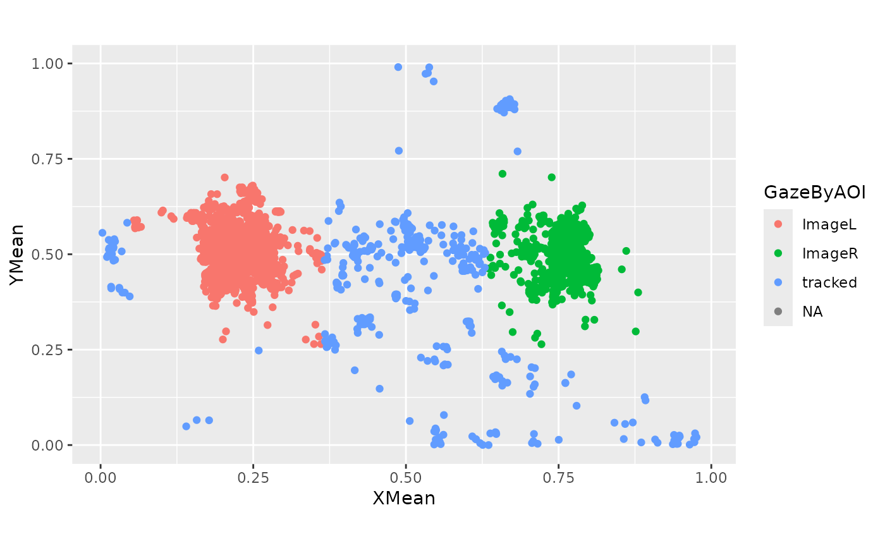

Tobii eyetracking data from scratch
tobii-example.RmdIn this example, I am going to produce a plot of proportion of looks
to a target image for a block of eyetracking data, more or less, from
scratch. The experiment was performed using Eprime with a Tobii
eyetracker running at 60 FPS. The files for this experiment are bundled
with this package and can be located with
example_files().
library(tidyverse)
library(littlelisteners)
paths_to_block1 <- example_files(2)
basename(paths_to_block1)
#> [1] "Coartic_Block2_001P00XS1.gazedata" "Coartic_Block2_001P00XS1.txt"
#> [3] "Coartic.yaml"Where
- the
.gazedatafile contains frame-by-frame eyetracking data. - the
.txtfilecontains Eprime’s trial-by-trial log of experiment data. - the
.yamlfile is a hand-created file with metadata about the experiment.
Reading in data
The experiment is a two-image looking-while-listening design. The yaml file includes the locations of the experiment’s areas of interest (AOIs) and the names of some pertinent fields to pull from the Eprime file.
data_yaml <- yaml::read_yaml(paths_to_block1[3])
str(data_yaml)
#> List of 5
#> $ task : chr "Coartic"
#> $ notes : chr "Coartic_WFFArea_2a (March 2013--ongoing).\nThe updated coarticulation pilot experiment incorporated \"filler\" "| __truncated__
#> $ display :List of 5
#> ..$ type : chr "Tobii60XL"
#> ..$ frames_per_sec: num 60
#> ..$ width_pix : int 1920
#> ..$ height_pix : int 1200
#> ..$ pixels_per_mm : num 3.71
#> $ aois :List of 3
#> ..$ comment: chr "Describes the location of the onscreen areas of interest (AOIs) with respect to the screen origin. The AOIs are"| __truncated__
#> ..$ ImageL :List of 8
#> .. ..$ name : chr "ImageL"
#> .. ..$ x_length: int 600
#> .. ..$ y_length: int 600
#> .. ..$ x_limits: int [1:2] 100 700
#> .. ..$ y_limits: int [1:2] 300 900
#> .. ..$ x_origin: chr "left"
#> .. ..$ y_origin: chr "bottom"
#> .. ..$ units : chr "pixels"
#> ..$ ImageR :List of 8
#> .. ..$ name : chr "ImageR"
#> .. ..$ x_length: int 600
#> .. ..$ y_length: int 600
#> .. ..$ x_limits: int [1:2] 1220 1820
#> .. ..$ y_limits: int [1:2] 300 900
#> .. ..$ x_origin: chr "left"
#> .. ..$ y_origin: chr "bottom"
#> .. ..$ units : chr "pixels"
#> $ locations:List of 2
#> ..$ comment: chr "Names of the Eprime columns that say where each image is"
#> ..$ target : chr "TargetImage"
data_yaml$notes |>
strwrap(70) |>
writeLines()
#> Coartic_WFFArea_2a (March 2013--ongoing). The updated coarticulation
#> pilot experiment incorporated "filler" trials and varied Pitch in the
#> carrier phrase. There is just one AudioStim file (2190 ms), with the
#> following parts: 1. Carrier word (find): 780 ms, 2. the: 560 ms, 3.
#> Target (ball): 850 ms. Target-onset occurs 1340 ms after
#> AudioStim.OnsetTime.This yaml file is useful because it prevents me from having to some numbers.
The Eprime file format is a headache, but I made the rprime package to help clean wrangle them. It was my first R package so the function names are kind of clunky.
# install.packages("rprime")
data_trial_all <- rprime::read_eprime(paths_to_block1[2]) |>
rprime::FrameList() |>
rprime::filter_in("Eprime.Level", 3) |>
rprime::to_data_frame() |>
tibble::as_tibble()
data_trial_all
#> # A tibble: 24 × 34
#> Eprime.Level Eprime.LevelName Eprime.Basename Eprime.FrameNumber Procedure
#> <dbl> <chr> <chr> <chr> <chr>
#> 1 3 TrialList_1 Coartic_Block2_00… 2 TrialPro…
#> 2 3 TrialList_2 Coartic_Block2_00… 3 TrialPro…
#> 3 3 TrialList_3 Coartic_Block2_00… 4 TrialPro…
#> 4 3 TrialList_4 Coartic_Block2_00… 5 TrialPro…
#> 5 3 TrialList_5 Coartic_Block2_00… 6 TrialPro…
#> 6 3 TrialList_6 Coartic_Block2_00… 7 TrialPro…
#> 7 3 TrialList_7 Coartic_Block2_00… 9 TrialPro…
#> 8 3 TrialList_8 Coartic_Block2_00… 10 TrialPro…
#> 9 3 TrialList_9 Coartic_Block2_00… 11 TrialPro…
#> 10 3 TrialList_10 Coartic_Block2_00… 12 TrialPro…
#> # ℹ 14 more rows
#> # ℹ 29 more variables: Running <chr>, ImageL <chr>, ImageR <chr>,
#> # Carrier <chr>, Target <chr>, Pitch <chr>, AudioStim <chr>, Attention <chr>,
#> # AudioDur <chr>, AttentionDur <chr>, WordGroup <chr>, StimType <chr>,
#> # TargetWord <chr>, Cycle <chr>, Sample <chr>, Image2sec.OnsetTime <chr>,
#> # Image2sec.StartTime <chr>, Fixation.OnsetDelay <chr>,
#> # Fixation.OnsetTime <chr>, Fixation.StartTime <chr>, …That has a lot of information. We can get to the core of the experiment’s trial data:
data_trial <- data_trial_all |>
rename_with(
function(x) stringr::str_replace(x, ".OnsetTime", "Onset")
) |>
rename(CarrierOnset = TargetOnset) |>
mutate(
across(c(ends_with("Onset"), AudioDur), as.numeric),
TargetOnset = as.numeric(CarrierOnset) + 1340,
TrialNo = Eprime.LevelName |>
stringr::str_extract("\\d+$") |>
as.numeric()
) |>
select(
Basename = Eprime.Basename,
TrialNo,
Condition = StimType,
WordGroup,
TargetWord,
Target,
AudioDur,
Image2secOnset,
FixationOnset,
CarrierOnset,
TargetOnset,
Wait1SecFirstOnset,
AttentionOnset
)
data_trial |>
glimpse()
#> Rows: 24
#> Columns: 13
#> $ Basename <chr> "Coartic_Block2_001P00XS1", "Coartic_Block2_001P00X…
#> $ TrialNo <dbl> 1, 2, 3, 4, 5, 6, 7, 8, 9, 10, 11, 12, 13, 14, 15, …
#> $ Condition <chr> "neutral", "competing", "filler", "neutral", "facil…
#> $ WordGroup <chr> "dog-book", "duck-ball", "cookie-shoe", "dog-book",…
#> $ TargetWord <chr> "book", "duck", "cookie", "dog", "ball", "book", "c…
#> $ Target <chr> "ImageL", "ImageR", "ImageL", "ImageR", "ImageR", "…
#> $ AudioDur <dbl> 2190, 2190, 2190, 2190, 2190, 2190, 2190, 2190, 219…
#> $ Image2secOnset <dbl> 32797, 41675, 60902, 70750, 80079, 91799, 105526, 1…
#> $ FixationOnset <dbl> 34352, 43230, 62457, 72304, 81651, 93354, 107081, 1…
#> $ CarrierOnset <dbl> 35087, 53412, 63560, 72940, 84426, 93856, 107565, 1…
#> $ TargetOnset <dbl> 36427, 54752, 64900, 74280, 85766, 95196, 108905, 1…
#> $ Wait1SecFirstOnset <dbl> 37277, 55602, 65750, 75130, 86616, 96046, 109756, 1…
#> $ AttentionOnset <dbl> 38281, 56605, 66754, 76133, 87619, 97049, 110759, 1…Finally, we have the actual eyetracking data.
read_gazedata() reads the .gazedata file into R as a
tibble, applies some adjustments based on Tobii’s validity coding
system, blanks out invalid gaze locations, flips the y
measurements so the origin is the lower-left corner of the screen, and
computes monocular means of eyetracking measurements.
data <- read_gazedata(paths_to_block1[1])
glimpse(data)
#> Rows: 15,265
#> Columns: 17
#> $ Basename <chr> "Coartic_Block2_001P00XS1", "Coartic_Block2_001P00XS1", …
#> $ TrialNo <int> 1, 1, 1, 1, 1, 1, 1, 1, 1, 1, 1, 1, 1, 1, 1, 1, 1, 1, 1,…
#> $ TobiiTime <dbl> 1.360681e+12, 1.360681e+12, 1.360681e+12, 1.360681e+12, …
#> $ Time <int> 32789, 32805, 32821, 32840, 32853, 32875, 32905, 32905, …
#> $ Origin <chr> "LowerLeft", "LowerLeft", "LowerLeft", "LowerLeft", "Low…
#> $ XLeft <dbl> 0.3590417, 0.3615159, 0.3729760, 0.3781238, 0.3811296, N…
#> $ XRight <dbl> 0.3945794, 0.3814535, 0.3910438, 0.3896946, 0.3774196, N…
#> $ XMean <dbl> 0.3768106, 0.3714847, 0.3820099, 0.3839092, 0.3792746, N…
#> $ YLeft <dbl> 0.2779693, 0.2805615, 0.2833572, 0.2859311, 0.3208762, N…
#> $ YRight <dbl> 0.2553138, 0.2349956, 0.2570407, 0.2132781, 0.2432799, N…
#> $ YMean <dbl> 0.2666416, 0.2577785, 0.2701989, 0.2496046, 0.2820780, N…
#> $ ZLeft <dbl> 542.9340, 542.9340, 543.7443, 543.7443, 544.3433, NA, NA…
#> $ ZRight <dbl> 528.3995, 528.2514, 528.1776, 528.1776, 528.0162, NA, NA…
#> $ ZMean <dbl> 535.6667, 535.5927, 535.9609, 535.9609, 536.1798, NA, NA…
#> $ DiameterLeft <dbl> 3.846870, 3.638104, 3.692146, 3.343456, 3.469087, NA, NA…
#> $ DiameterRight <dbl> 3.627839, 3.651085, 3.590531, 3.453871, 3.542747, NA, NA…
#> $ DiameterMean <dbl> 3.737354, 3.644595, 3.641338, 3.398664, 3.505917, NA, NA…Note that the gaze locations are written in terms of screen proportions, not pixels where 0 is a bottom or left edge and 1 is a top or right edge.
Combining looking data and trial data
The Basename and TrialNo columns allow us
to combine two dataframes.
Now, we do a flurry of things. First, we define areas of interest and map looks to the AOIs.
aois <- list(
create_aoi(
aoi_name = data_yaml$aois$ImageL$name,
x_pix = data_yaml$aois$ImageL$x_limits,
y_pix = data_yaml$aois$ImageL$y_limits,
screen_width = data_yaml$display$width_pix,
screen_height = data_yaml$display$height_pix
),
create_aoi(
aoi_name = data_yaml$aois$ImageR$name,
x_pix = data_yaml$aois$ImageR$x_limits,
y_pix = data_yaml$aois$ImageR$y_limits,
screen_width = data_yaml$display$width_pix,
screen_height = data_yaml$display$height_pix
)
)add_aois() maps from screen proportions to AOI
locations. This function could use some work. It assumes that the looks
are stored in XMean and YMean columns and
creates a GazeByAOI column. It marks any onscreen look
outside of an AOI as "tracked".
data <- data |>
add_aois(aois = aois, default_onscreen = "tracked")
ggplot(data) +
aes(x = XMean, y = YMean) +
geom_point(aes(color = GazeByAOI)) +
coord_fixed(1200 / 1920)
#> Warning: Removed 11145 rows containing missing values or values outside the scale range
#> (`geom_point()`).
We can interpolate missing looks to remove blinks or other short gaps
in the data. This will just fill in the response_col values
and not the gaze locations.
data <- data |>
group_by(Basename, TrialNo) |>
interpolate_looks(
window = 150,
fps = 60,
response_col = "GazeByAOI",
interp_col = "WasInterpolated",
fillable = c("ImageL", "ImageR"),
missing_looks = NA
) |>
ungroup()Here is what we recovered:
data |>
count(GazeByAOI, WasInterpolated)
#> # A tibble: 6 × 3
#> GazeByAOI WasInterpolated n
#> <chr> <lgl> <int>
#> 1 ImageL FALSE 2739
#> 2 ImageL TRUE 458
#> 3 ImageR FALSE 927
#> 4 ImageR TRUE 172
#> 5 tracked FALSE 454
#> 6 NA FALSE 10515Now we map the left/right image locations GazeByAOI to
the experimental roles of the images GazeByImageAOI in each
trial. The least clever way to do this is a table join.
aoi_mapping <- tibble::tribble(
~GazeByAOI, ~Target, ~GazeByImageAOI,
"ImageL", "ImageL", "Target",
"ImageL", "ImageR", "Distractor",
"ImageR", "ImageR", "Target",
"ImageR", "ImageL", "Distractor",
"tracked", "ImageL", "tracked",
"tracked", "ImageR", "tracked",
NA, "ImageL", NA,
NA, "ImageR", NA
)
data <- data |>
left_join(aoi_mapping, by = c("Target", "GazeByAOI"))The final step for preprocessing is to align the trials so that time = 0 is the target onset. This function should just work on grouped dataframe sigh instead of including them haphazardly.
data <- data |>
adjust_times(
time_var = Time, event_var = TargetOnset,
# grouping variables
Basename, TrialNo
)Aggregating data
At each frame, we can count the proportion of looks to the target. First, we need create a response definition which tells little listeners how to treat the labels in terms of targets and competitors.
def <- create_response_def(
primary = "Target",
others = "Distractor",
elsewhere = "tracked"
)
data_agg <- data |>
filter(-2000 < Time, Time < 2000) |>
aggregate_looks(def, Condition + Time ~ GazeByImageAOI)
ggplot(data_agg) +
aes(x = Time, y = Prop) +
geom_line(aes(color = Condition))
From here, we might combine multiple blocks of trials for this participant together and downsample the data into 50 ms to get a less jumpy line.